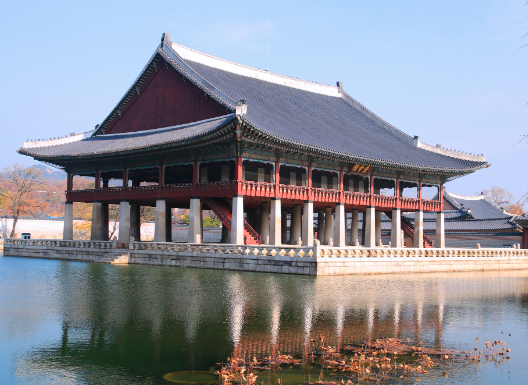

경복궁은 조선왕조의 궁궐 중 하나로 대한민국의 대표적인 궁궐인 경복궁은 조선시대 왕들의 정치적 중심지이자 거주지였습니다. 조선시대 대표적인 건축물과 예술 작품을 감상할 수 있습니다. 계절에 따라서 아름다운 나무들의 모습을 볼 수 있습니다.
경복궁은 서울의 대표적인 문화유산 중 하나이며 한국 전통 건축과 조선 왕실의 역사를 체험할 수 있는 장소입니다. 매년 봄과 가을에는 서울에서 대표적인 축제인 경복궁 온누리상상축제가 열리며 많은 관광객들이 찾는 장소입니다.
>